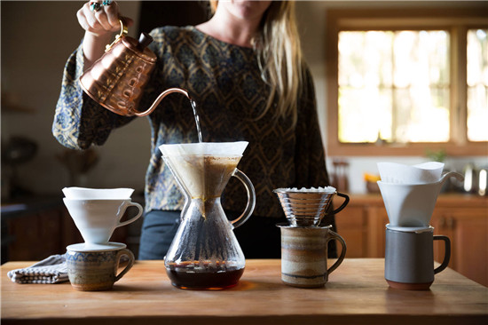
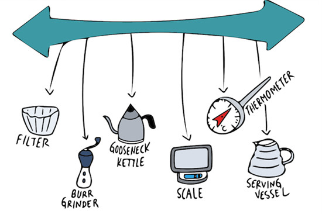
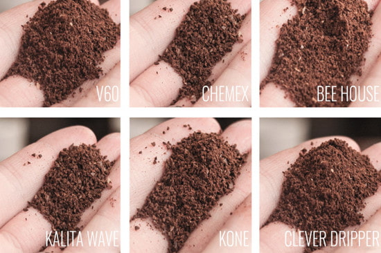
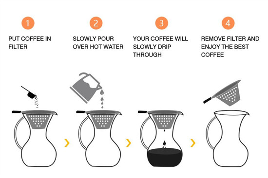

Pour Over là một trong những phương pháp pha cafe truyền thống, có từ những thập niên 90. Khi uống sẽ cảm nhận rõ ràng vị cafe nguyên chất, chính vì thế cách pha chế này rất được nhiều người đam mê cafe sử dụng. Hiện nay, cách pha chế này đã có mặt ở một số quán cafe tại Việt Nam.
1. Khái Niệm Pour Over Là Gì ?
Pour over là kiểu pha cafe truyền thống, đơn giản và hiệu quả. Sử dụng phương pháp nhỏ giọt thông qua bộ phận lọc (giấy lọc hoặc lưới thép), một bộ phận giữ phần lọc (dripper) khá giống phin cafe Việt Nam và bình hoặc ly tách đựng cafe. Phương pháp Pour Over hay còn gọi là Drip ra đời vào năm 1908 tại Đức. Cách pha chế tương đối cầu kì, đòi hỏi nhiệt độ nước pha cafe tương đối chuẩn xác. Điểm làm nên sự khác biệt của Pour Over đó là sử dụng loại cafe có hương vị ngon để pha. Phương pháp pha chế này sẽ cho vị cafe nguyên chất, đậm đà, chính xác với chất lượng cafe. Cho nên là nếu cafe dở thì khi pha sẽ rất tệ, khó uống. Phần lựa cafe sao cho phù hợp sẽ đề cập ở bên dưới.
Những Kĩ Thuật Cơ Bản Khi Pha Chế Cafe Pour Over
Lựa Chọn Bộ Pha Chế Pour Over Chuẩn
Riêng Pour Over không giống cafe phin bình thường, hương vị của cafe có thể bị ảnh hưởng bởi nguyên liệu mà bạn sử dụng để pha chế. Hệ thống bộ lọc pha chế cafe kiểu này rất đa dạng chất liệu, kiểu dáng. Không chỉ chuẩn mà còn phù hợp và tiện dụng.
Tính linh động
Trước tiên, bạn muốn sử dụng bộ lọc tiện dụng để đi du lịch mang theo, hay để sử dụng pha chế tại nhà? Sở dĩ bạn phải nghĩ đến sự linh động của phin pha để lựa chọn những phụ kiện đi kèm phù hợp. Cụ thể là với Pour Over bạn không chỉ có phễu lọc, còn chọn ly đựng phù hợp với kích thước của phễu và bình chế nước kèm những phụ kiện đi cùng hợp lý nhất.
Tần suất sử dụng coffee
Bạn thường uống bao nhiêu tách cafe trong một ngày? Nếu bạn nấu một ly trong vòng 4 phút đổ nước, bạn có thể lựa chọn chiếc Hario V60. Nếu lượng sử dụng bạn nhiều hơn, đáp ứng cho nhu cầu đó thì loại máy Chemex là sự lựa chọn đúng đắn.
Dụng cụ và phụ kiện
Một bộ pha chế kiểu Pour Over sẽ gồm: 1 phễu drip – hình nón, 1 filter – giấy lọc/lưới lọc, ấm nước nóng có vòi rót nhỏ để dễ kiểm soát tốc độ rót nước, cân điện tử gram, đồng hồ bấm giờ (có thể sử dụng đồng hồ bấm giờ ở điện thoại. Hiện nay có rất nhiều thiết kế hình phễu khác nhau: vị trí, kích thước lỗ lọc, các gờ trên phễu, độ mở của phễu,… những yếu tố này sẽ tác động đến quá trình chiết xuất.
Xay cafe
Từng loại bộ lọc sẽ có loại cafe thích hợp đi kèm, nếu bạn không để ý đến yếu tố này sẽ dẫn đến tình dạng dễ bị nghẽn hoặc chảy quá nhanh, đôi khi sẽ dẫn đến kết quả chất lượng cafe không như mong đợi. Mức độ xay tiêu chuẩn là gần giống với pha cafe phin Việt Nam, to hơn hạt muối biển, ở mức Coarse.
Kỹ thuật rót nước
Pour trong pouring dịch sang tiếng Việt là rót nước. Chính tên của phương pháp này đã nhấn mạnh tầm quan trọng trong cách pha chế Pour Over.
Trong quá trình pha cafe, bạn cần rót nước liên tục để bổ sung độ ẩm vào cafe. Không chỉ vậy, bạn cần thận trọng rót nước để cafe có thể hòa tan, nhỏ giọt thành những dòng cafe hoàn hảo, nhưng nếu bạn không kiểm soát lượng nước, mọi thứ sẽ trở nên ngược lại. Đến đây, bạn không nên hiểu sai khi chỉ cần rót nước chậm thì sẽ tốt. Sở dĩ, bạn rót nước chậm sẽ khiến cho nhiệt độ nước, nhiệt độ trong phễu thay đổi. Do đó, không chỉ chuẩn bị bộ dụng cụ pha chế chuyên nghiệp mà bạn cần rèn luyện, thực hành nhiều lần để có những tách cafe đạt chuẩn vị Pour Over. Thời gian lý tưởng để kết thúc quá trình là từ 4 đến 4 phút 30 giây.
Thông thường, các nghệ nhân pha chế ngay trước mặt khách hàng. Khiến họ thích thú, tò mò, chiêm ngưỡng quá trình, ngắm nhìn sự tỉ mỉ và trong lúc chờ đợi có thể ngửi thấy mùi thơm đặc biệt của cafe. Giống như vẽ tranh, bạn ngắm nhìn người thợ vẽ tranh từ trang giấy trắng sau vài tiếng có cả một kiệt tác đáng trầm trồ, ngưỡng mộ. Ly cafe thì chỉ có một, nhưng để làm ra ly cafe lại có nhiều cách pha chế khác nhau. Mỗi cách pha chế đem lại những hương vị và cảm nhận rất riêng. Để thưởng thức những ly cafe pha chế theo phong cách Drip, bạn có thể đến các quán cafe như: Là Việt (Đà Lạt), Workshop Coffee (Sài Gòn), Shin Coffee (Sài Gòn),…